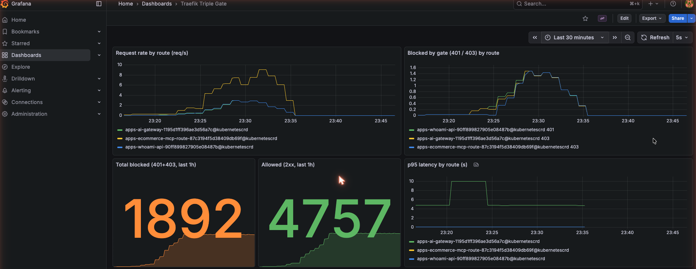
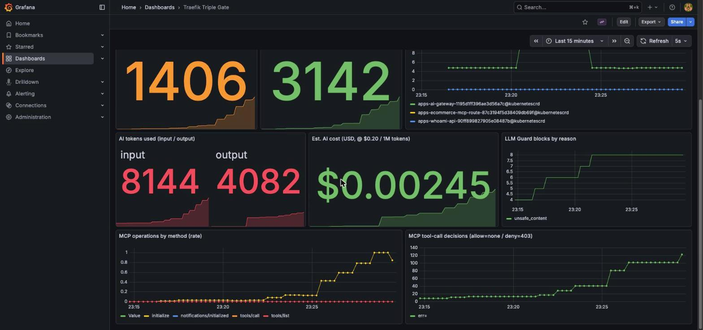

Observability
Observability is first-class here, not an afterthought: every gate's decisions are
visible as metrics. Traefik exposes Prometheus metrics for request flow (so a
guard block shows up as a 403 on a specific route), and OpenTelemetry metrics
for AI token usage and MCP tool calls. The whole stack is GitOps-managed.
flowchart LR
T[Traefik Hub] -->|Prometheus :9100| P[Prometheus]
T -.->|OTLP · AI tokens, MCP tools| O[OTel Collector]
O -->|Prometheus exporter| P
P --> G[Grafana]What ArgoCD manages
| Application | Chart / source | Role |
|---|---|---|
observability-prometheus |
prometheus 29.13.0 | Scrapes Traefik (:9100) + the collector |
observability-grafana |
grafana 10.5.15 | Dashboards (Prometheus datasource) |
observability-dashboards |
poc/observability/ |
The Triple Gate dashboard (ConfigMap) |
observability-otel |
opentelemetry-collector 0.158.2 | Bridges Traefik OTLP (AI/MCP metrics) → Prometheus |
Traefik itself is told to emit per-route labels and advertise a scrape target:
metrics:
prometheus:
addEntryPointsLabels: true
addRoutersLabels: true # per-route metrics → guard hits per gate
addServicesLabels: true
deployment:
podAnnotations:
prometheus.io/scrape: "true"
prometheus.io/port: "9100"
prometheus.io/path: /metrics
A real gotcha
podAnnotations lives under deployment.podAnnotations in chart v41: putting it at the root makes the Helm values fail schema validation, which surfaces in ArgoCD as a ComparisonError / SYNC=Unknown and silently blocks all of that app's changes. If an app won't apply a value, check kubectl -n argocd get application <name> -o jsonpath='{.status.conditions}'.
Open it
Dashboard Traefik Triple Gate has request rate by route, blocked-by-gate (401/403), allowed vs blocked counters, and p95 latency.
What the gates look like in metrics
After running the unified demo, the per-route counters show each gate doing its job: the same evidence, now as telemetry:
Prometheus runs inside the cluster, so open a port-forward first (in a separate terminal that keeps running), then query it:
$ # in another terminal: blocked requests by route + code
$ curl -sG http://localhost:9090/api/v1/query \
--data-urlencode 'query=sum by (router,code) (traefik_router_requests_total{code=~"401|403"})' \
| jq -r '.data.result[] | .metric.router + " " + .metric.code + " " + .value[1]'
apps-whoami-api-… 401 6 # Gate 1: anonymous/forged rejected
apps-ai-gateway-… 403 6 # Gate 2: Content Guard + LLM Guard blocks
apps-ecommerce-mcp-… 403 6 # Gate 3: TBAC tool denials
Empty result? Check the port-forward
curl http://localhost:9090/... returning nothing almost always means no port-forward is running (connection refused): Prometheus isn't exposed on the host by default. Run prometheus-ui.sh first. The same applies to Grafana (grafana-ui.sh, :3000).
AI & MCP metrics via OpenTelemetry
Traefik exposes request metrics on the Prometheus endpoint, but the AI- and MCP-specific metrics are emitted over OTLP only. An OpenTelemetry Collector receives them and re-exposes them to Prometheus. What arrives is richer than expected: it follows the OpenTelemetry GenAI semantic conventions.
Implementation
1. Point Traefik's OTLP metrics exporter at the collector (added to the same
traefik Application values):
metrics:
otlp:
enabled: true
http:
enabled: true
endpoint: http://otel-collector.observability.svc.cluster.local:4318/v1/metrics
addRoutersLabels: true
addServicesLabels: true
2. Run the collector (the contrib image, which has the prometheus exporter):
OTLP in on :4318, Prometheus out on :8889, scraped via a pod annotation.
config:
receivers:
otlp:
protocols:
http: { endpoint: 0.0.0.0:4318 }
exporters:
prometheus:
endpoint: 0.0.0.0:8889
service:
pipelines:
metrics: { receivers: [otlp], exporters: [prometheus] }
3. Verify delivery by querying Prometheus (not the collector; see the warning below). Run some AI/MCP traffic, then:
$ ./poc/scripts/prometheus-ui.sh # separate terminal
$ curl -sG http://localhost:9090/api/v1/query \
--data-urlencode 'query=sum by (gen_ai_token_type) (gen_ai_client_token_usage_sum)' \
| jq -r '.data.result[] | .metric.gen_ai_token_type + " = " + .value[1]'
Confirm OTLP delivery in Prometheus, not the collector
During bring-up the collector's in-pod :8889 endpoint can read as empty
even while data flows (a busybox wget quirk). The reliable check is querying
Prometheus. To prove the collector is receiving, add a debug exporter
(verbosity: detailed) to the metrics pipeline and watch its logs (that's how
this PoC confirmed Traefik was emitting all along), then remove it. Note the
collector pod must be restarted (kubectl rollout restart) to pick up a
config change.
Metrics emitted
| Metric (Prometheus name) | What it gives us |
|---|---|
gen_ai_client_token_usage_sum |
Input/output token counts by model, drives a cost estimate |
gen_ai_client_operation_duration_seconds |
LLM call latency |
traefik_hub_llm_guard_requests_total{reason} |
LLM Guard blocks by reason (e.g. unsafe_content) |
mcp_client_operation_duration_seconds_count{mcp_method_name,error_type} |
MCP tool-call decisions (allow vs error_type="403") |
Observed live after traffic:
AI tokens input = 942 output = 167
Est. AI cost ≈ $0.0002 (@ $0.20 / 1M tokens)
LLM Guard blocks reason="unsafe_content" = 3
The Grafana dashboard adds panels for token usage, estimated cost, LLM Guard blocks by reason, and MCP operations by method/decision.
Findings (honest assessment)
Strong:
- Standards-first. AI metrics use the OTel GenAI semantic conventions
(
gen_ai.token.type,gen_ai.request.model, …), so token usage and cost are vendor-neutral and portable, not a proprietary shape. - Governance-grade signals out of the box. Token usage → cost, guard blocks by reason, and per-tool MCP decisions are exactly what a regulated buyer needs for AI cost control and audit.
- Request metrics carry per-route labels, so each gate's blocks (401/403) are directly visible without custom instrumentation.
Rough edges (worth flagging):
- The AI/MCP metrics are OTLP-only: you must run a collector to get them into Prometheus; they aren't on Traefik's Prometheus endpoint. Expect that extra hop.
- Content Guard has no obvious dedicated counter like LLM Guard's
..._requests_total{reason}; its blocks are only visible as403on the route. - On a denied MCP
tools/call,mcp_tool_nameisn't always populated (the request is rejected before tool resolution), so deny-by-tool charts lean onerror_type - the route's
403. - Operational gotchas (documented inline):
deployment.podAnnotations(not root), the collector needs a restart to pick up config, and querying the in-pod exporter directly can mislead. Query Prometheus, not the collector's:8889, to confirm delivery.
The dashboard
Captured after sustained traffic through all three gates.
Request flow & gate enforcement: request rate per route, blocked-by-gate (401/403), allowed vs blocked, and p95 latency:

AI & agent governance: token usage (input/output), estimated cost, LLM Guard blocks by reason, and MCP operations / tool-call decisions:

Reproduce the screenshots
./poc/scripts/grafana-ui.sh, then in another terminal run traffic for a minute
(./poc/scripts/unified-demo.sh a few times, or a curl loop), and the panels
fill in. The rate() panels use a 5-minute window because Prometheus scrapes
every ~60s; a [1m] window only catches one sample and reads "No data".